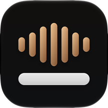

מדיניות פרטיות
מילים
עודכן לאחרונה: 23 בספטמבר 2026
תודה שבחרת ב״מילים״. אנו מכבדים את פרטיותך. מסמך זה מסביר איזה מידע האפליקציה מעבדת וכיצד.
תמלול במכשיר (ברירת מחדל)
תמלול הכתוביות הרגיל מתבצע כולו על המכשיר שלך, באמצעות מודל זיהוי דיבור מקומי. הסרטונים, האודיו והכתוביות שלך אינם נשלחים לשום שרת במסלול הזה, ונשמרים רק במכשיר.
תמלול ענן (Pro, אופציונלי)
אם תבחר בתמלול הענן המדויק (חלק ממנוי Pro), האודיו של הקטע שבחרת יישלח לשרת עיבוד חיצוני (ElevenLabs), יעובד שם כדי להפיק כתוביות, ויימחק לאחר העיבוד. שימוש זה מתבצע רק לאחר אישור מפורש שלך, ורק כאשר תבחר במסלול הענן. איננו שומרים את האודיו בשרתים שלנו.
כמו בכל חיבור אינטרנט, במסלול זה נשלחת גם כתובת ה־IP של המכשיר לספק העיבוד. העיבוד כפוף למדיניות הפרטיות של ElevenLabs, הזמינה בכתובת elevenlabs.io/privacy.
תרגום ענן (Pro, אופציונלי)
אם תפעיל תרגום ענן, טקסט הכתוביות בלבד (לא הווידאו ולא האודיו) יישלח לשירות תרגום חיצוני (Google Cloud Translation) לצורך התרגום, ואינו נשמר בשרתים שלנו לאחר העיבוד. העיבוד כפוף למדיניות הפרטיות של Google, הזמינה בכתובת policies.google.com/privacy.
מנויים
המנויים מנוהלים על ידי Apple דרך חשבון ה־Apple ID שלך. איננו רואים ואיננו שומרים את פרטי התשלום שלך. אימות המנוי מתבצע באמצעות קבלה חתומה של Apple.
חשבון וסנכרון (אופציונלי)
האפליקציה אינה דורשת חשבון ועובדת במלואה בלעדיו. אם תבחר להתחבר (Sign in with Apple) כדי לסנכרן פרויקטים בין המכשירים שלך, נשמור בשרת שלנו:
- מזהה המשתמש שמספקת Apple, וכתובת אימייל אם בחרת לשתף אותה (ייתכן שתהיה כתובת ממסר פרטית של Apple);
- אסימון התחברות (נשמר בצורה מוצפנת חד־כיוונית);
- תוכן הפרויקטים שמסתנכרן: הכתוביות, התזמונים, הסגנון ושם הפרויקט.
קובצי הווידאו והאודיו שלך אינם מועלים לענן במסגרת הסנכרון: הם נשארים במכשיר בלבד. נתוני החשבון והסנכרון מאוחסנים בתשתית הענן של Cloudflare ואינם משמשים לשום מטרה מלבד הסנכרון.
מחיקה: מחיקת פרויקט באפליקציה מסירה אותו גם מהשרת. ניתן למחוק את החשבון ואת כל הנתונים המסונכרנים בכל עת מתוך האפליקציה (הגדרות ← חשבון וסנכרון ← מחיקת חשבון), או בפנייה אלינו במייל.
איסוף נתונים ואנליטיקה
האפליקציה אינה אוספת נתוני שימוש או אנליטיקה, ואינה עוקבת אחריך בין אפליקציות או אתרים.
הרשאות
- גלריה/מדיה: לצורך בחירת סרטון או קובץ אודיו לתמלול, ולשמירת סרטונים מיוצאים.
- זיהוי דיבור: לצורך הפקת הכתוביות מהאודיו במכשיר.
ילדים
האפליקציה אינה מיועדת לילדים מתחת לגיל 13 ואינה אוספת מהם מידע ביודעין.
זכויותיך
המידע המקומי נשמר במכשירך; מחיקת האפליקציה או הפרויקטים מוחקת אותו. נתונים מסונכרנים ניתנים למחיקה כמתואר בסעיף ״חשבון וסנכרון״. לשאלות בנוגע למידע שלך ניתן לפנות אלינו בכתובת שלהלן.
שינויים במדיניות
אנו עשויים לעדכן מדיניות זו מעת לעת. תאריך העדכון בראש העמוד ישקף את השינוי האחרון.
יצירת קשר
Privacy Policy
Milim
Last updated: September 23, 2026
Thank you for choosing Milim (מילים). We respect your privacy. This document explains what information the app processes and how.
On-device transcription (default)
Standard subtitle transcription runs entirely on your device, using a local speech recognition model. In this mode your videos, audio and subtitles are not sent to any server and stay only on your device.
Cloud transcription (Pro, optional)
If you choose the more accurate cloud transcription (part of the Pro subscription), the audio of the segment you selected is sent to an external processing server (ElevenLabs), processed there to generate subtitles, and deleted after processing. This happens only after your explicit consent, and only when you choose the cloud option. We don't store the audio on our servers.
As with any internet connection, in this mode your device's IP address is also sent to the processing provider. Processing is subject to the ElevenLabs privacy policy, available at elevenlabs.io/privacy.
Cloud translation (Pro, optional)
If you turn on cloud translation, only the subtitle text (not the video or the audio) is sent to an external translation service (Google Cloud Translation) for translation, and it isn't kept on our servers after processing. Processing is subject to Google's privacy policy, available at policies.google.com/privacy.
Subscriptions
Subscriptions are managed by Apple through your Apple ID. We don't see or store your payment details. Subscriptions are verified using Apple's signed receipt.
Account and sync (optional)
The app doesn't require an account and works fully without one. If you choose to sign in (Sign in with Apple) to sync projects across your devices, we store on our server:
- The user identifier provided by Apple, and your email address if you chose to share it (this may be a private Apple relay address);
- A sign-in token (stored with one-way encryption);
- The content of synced projects: subtitles, timings, style and project name.
Your video and audio files are not uploaded to the cloud as part of sync: they stay on your device only. Account and sync data is stored on Cloudflare's cloud infrastructure and is used for no purpose other than sync.
Deletion: Deleting a project in the app also removes it from the server. You can delete your account and all synced data at any time from within the app (Settings › Account & Sync › Delete Account), or by contacting us by email.
Data collection and analytics
The app doesn't collect usage data or analytics, and doesn't track you across apps or websites.
Permissions
- Photos/Media: to choose a video or audio file for transcription, and to save exported videos.
- Speech recognition: to generate subtitles from the audio on your device.
Children
The app isn't directed at children under 13 and doesn't knowingly collect information from them.
Your rights
Local data is stored on your device; deleting the app or your projects removes it. Synced data can be deleted as described in the "Account and sync" section. For questions about your data, you can contact us at the address below.
Changes to this policy
We may update this policy from time to time. The date at the top of the page reflects the latest change.